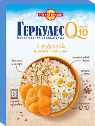

Миксером взбейте яйца с 2 ст. л. сахара и солью в пышную пену. Добавьте разрыхлитель для теста и снова перемешайте. Насыпьте овсяные хлопья и муку, влейте 4 ст. л. растопленного сливочного масла и простоквашу, аккуратно перемешайте и оставьте тесто на 15-2 минут.


 Выбери свой Геркулес
Выбери свой Геркулес
Смузибоул с греческим йогуртом, овсянко и орехом кешью
Смузибоул с греческим йогуртом, овсянкой и орехом кешью
Вам понадобится для этого ...

Q10 с Тыквой и тыквенными семечками

- 240 мл несладкого греческого йогурта
- 50 г овсянки «Геркулес Актив»
- 50 г орехов кешью
- 2 ст. л. меда
- щепотка морской соли
- 2 банана
- 100 г голубики
- 100 г малины
Новый вкус
на каждый день
на каждый день
Воспользуйтесь нашим интерактивным конструктором и с легкостью подберите оптимальный Геркулес